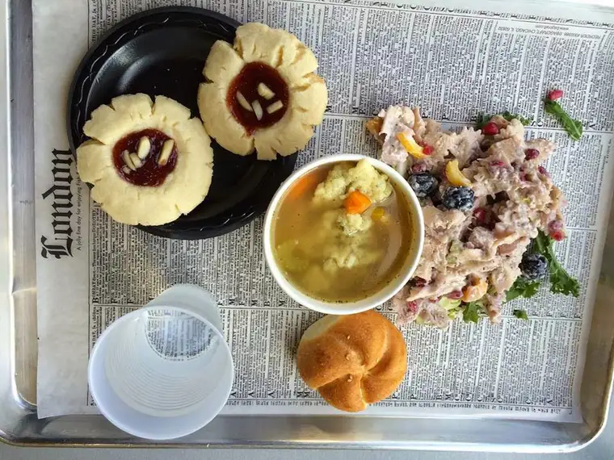

I’m finally going to call it what it is: a ministry.
Boy that feels good! For years, I’ve not been giving it its due, but more and more, I am seeing the truth of it, this lunching with friends that I do so frequently.
 |
| Thursday’s lunch, Scratch Deli, Fargo (w/extra cookie for son at home) |
{kind=link}
I’ve been doing it for many years, even in the years when the kids were little. I would bring them to a drop-off daycare a couple times a month to take time out with friends.
Even in the years I felt guilty about it — the mother-guilt thing — I sensed at bottom that this act of leaving the house to spend time with friends was valuable. I’d even go as far as saying it’s spiritual.
Finally, I am recognizing it for what it is: part of what God wants me to be doing, and part of the way I can best serve Him.
{kind=link}
It helps to think of it in terms of my deep-down yearning to be a nun. I’ve posted about that several times before, and I’m sure it makes some giggle. But the yearning helps me think more about my purpose — what I’m ultimately here to do.
As I’ve said before, the yearning doesn’t mean I believe I’ve chosen wrong, or that I want another life. It’s more of a heaven-leaning desire. The life of a religious sister allows a full-out dunking of spending time with the Lord in a way I am not allowed in my current vocation, but desire. I’ve been called to something else.
{kind=link}
{kind=link}
So in the yearning, I step back and ask the question, “Okay, this is where you are, Roxane, where you belong, so in what ways can you go deep to serve God here in this life you are living, versus the dream life you sometimes pine for?”
In pondering this, the regular lunching I do with friends comes to mind. Because what I’ve found is that when my girlfriends and I take time out of the busy to meet for lunch, it’s not just about feeding our stomachs but feeding our very hungry souls. And it’s something I couldn’t do as a cloistered nun.
{kind=link}
And it becomes a necessary mingling of two souls –an effort useful in and of itself.
I think it comes down to this: the gift of time. Taking time out to converse with another soul sister is a valuable endeavor, as important, perhaps, as a nun serving a house guest lunch. It seems so ordinary, but often, when we part, the friend of focus seems changed somehow, and I do, too.
God has called me to be in the world, and so it is in the world, in what would seem a most natural and ordinary act – that of taking time to be with a friend – that I am able to fulfill His purpose for me.
This is a bit of a stretch, you say? Lunching with friends is a luxury, not a spiritual endeavor! Well, I beg to differ. I’ve been doing this long enough to know that something more is at work than just an ordinary, and somewhat meaningless, lunch out.
When I jumped into full-time, outside work a couple years back, one of the things I missed most of all was not having the time to lunch with friends. When I did go out to lunch, I needed down time, and space. I craved alone time. And my lunch hours were short. I began to feel the loss of this ministry, and it was a small part of the reason I chose a different route, and am now back at home.
Working from home comes with its own challenges, but one of the benefits is that it does allow me to have the kind of schedule that accommodates my lunching ministry. And the beautiful thing about this ministry is that, like most ministries, it’s circular. My friends, I think, appreciate these times, but so do I. We almost always come away feeling like something important took place, even if that something important would seem invisible to most.
We shouldn’t exclude these small, ordinary acts as significant. The kingdom of God is built little by little, one lunch at a time. We need each other, and it’s important, especially in this digital world, that we take face-to-face time to be with our fellow journey-women.
Now, to find time to lunch with everyone in my life who matters — I’ve got quite a list, I have to say, and I’m blessed for it. I hope the same is true in reverse
Q4U: Do you see having coffee or lunch with a friend as the sacred act it is?